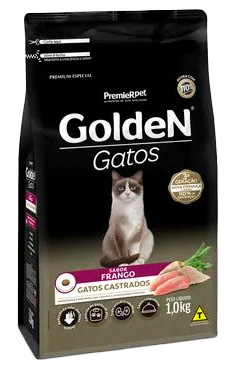
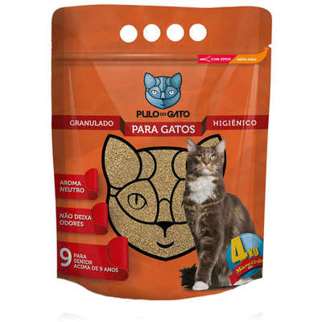

Produtos para Gato Sênior

Ração Golden Gatos Castrados Sênior Frango 3 kg
- Contribui para o trato urinário saudável;
- Rico em ômegas 3, 6 e taurina;
- R$ 62,91!

Areia Sanitária Premium para Gatos Sênior 4 kg
- Mix de grãos - Micro, Médio e Grosso;
- Elimina 100% os odores da urina;
- R$ 15,89!